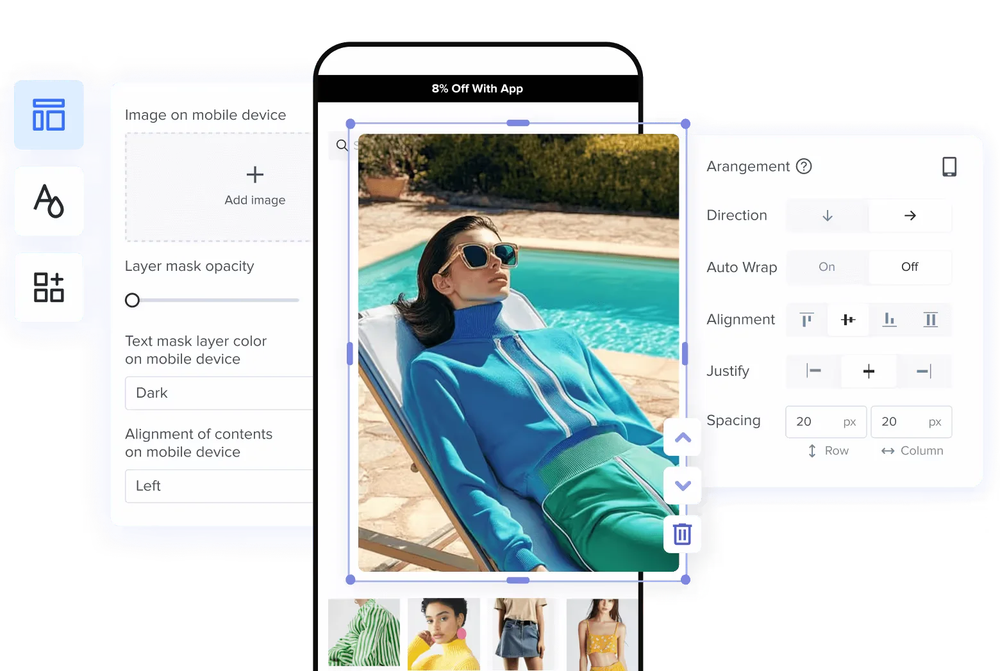
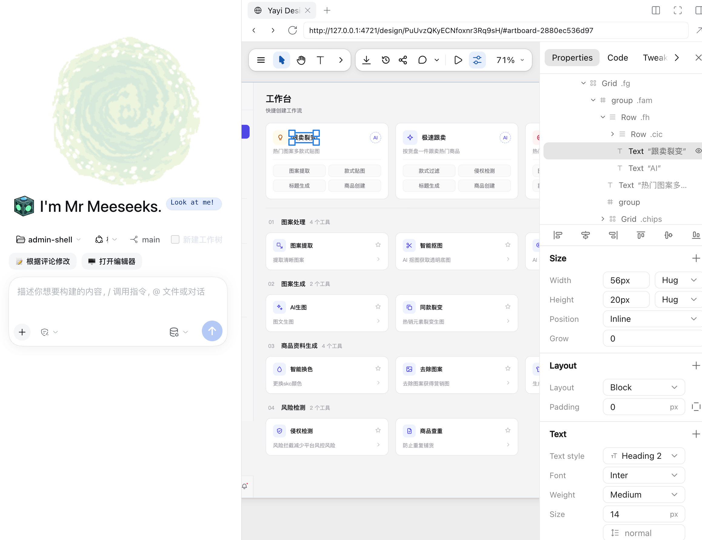

SELECTED WORK
项目案例

AI 工作流引擎与编排平台
把「靠运营经验」的商品生产，改成 10+ 个原子能力通过工作流灵活串联，人机协同稳定进行商品资料生产。

独立站可视化编辑器
组件原子化 + Flexbox 布局重构主题架构，适配商家全球化运营支持多市场装修。搭建主题商城的开发者生态。

个人项目·AI实践
把 AI 从「会用」推到「做成产品」：画布可视化原型工具，dsh任务状态提醒工具。百万用户c端小程序。
AI CAPABILITY REVIEW
模型落地我做了什么
我不做模型训练。我做的是把真实场景还原清楚，再用能验收的指标决定它能不能进工作流。
01 场景调研
先看现在怎么干，再看模型能不能介入
先看业务现在用什么产品、怎么做，卡在什么问题上。收集现有数据和典型案例，以及希望达到的效果。再看它和前后环节有没有数据依赖。
02 对齐期望
写清模型要接住的效果
把场景收成案例，写清系统能传给模型的输入和输出。期望返回哪些字段、训练集要覆盖哪些数据，在训练前定下来。
03 模型落地
从训练效果到功能上线
训练回来先收回这些数：准确率、误报率、稳定性、推理时间、并发数、调用成本。同时标出表现不足的场景，以及接进业务系统之后变成什么样。
04 效果监控
上线之后看真实使用
上线后看真实业务数据。重点收回人工介入、失败，以及处理时长超过预期的记录，再按 bad case 改。
HOW I USE AI
在工作中如何逐步融入AI
01 为什么换
原来的组合留不住
Codex、WorkBuddy 的模型前端弱一点，也没有能维护、能改的可视化编辑器。Claude 封号严重。公司给了 Codex 和 Claude 的额度，agent 却是散的，切来切去麻烦。
02 选了什么
DSH + Magpie
理想是在 Codex 里用上 Claude 的 design 编辑器，做不到。最后选了 DSH + Magpie。
03 选完做了什么
改成自己的原型工作台
选了开源编辑器，按自己的需求改，发布成 DSH 插件，做成原型项目工作台。重复要说的话收成快捷指令，在输入框上方增删。养成习惯遇到需要的功能先找开源插件，再微调成自己的。
ABOUT
像工程师一样拆问题，
像设计师一样交付
做过跨境电商的 AI 自动化平台、独立站可视化编辑器和教育信息化；长期泡在真实业务里，把分散的场景抽象成可复用的平台能力。
英语专业八级，可独立对接海外团队与商家；持续把个人实践开源出来。